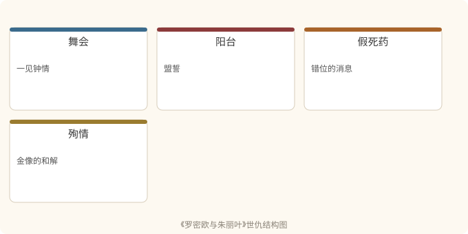

罗密欧与朱丽叶
一、基本信息
| 作者 | 莎士比亚 |
|---|---|
| 成书/出版 | 约1595年（通说待核；作者页 B033/B007 口径：major_works 载'罗密欧与朱丽叶'） William Shakespeare — Encyclopaedia Britannica（百科全书） |
| 国别/地区 | 英国 |
| 时代 | 近代 · 文艺复兴 |
| 体裁 | 悲剧 |
| 语言 | 英语 |

《罗密欧与朱丽叶》世仇结构图（主题·结构图）
二、创作背景
作者页（B033/B007）：莎士比亚 major_works 载'罗密欧与朱丽叶'（作者页定位，详见 hamlet 条核对）。
题材（通说）：维罗纳两大家族世仇中的殉情故事——源自 Arthur Brooke 长诗（通说待核）。
三、内容脉络
舞会一见钟情→阳台盟誓→秘密成婚→误杀与放逐→假死药与双重自杀（通说待核）。
四、主要人物表
| 人物 | 身份 | 说明 |
|---|---|---|
| 罗密欧 | 蒙太古家之子 | （通说） |
| 朱丽叶 | 凯普莱特家之女 | 十四岁（通说） |
| 劳伦斯神父 | 神父 | 计划的失败者（通说待核） |
五、主题与艺术特点
- 世仇与爱情的冲突（通说）。
- 命运的'星象'（通说待核——star-cross'd lovers）。
- 青春的炽烈语言（通说）。
六、影响与评论
- 作者页：莎翁名剧（B033/B007 作者页口径）。
William Shakespeare — Encyclopaedia Britannica（百科全书） - 无数改编：普罗科菲耶夫芭蕾、伯恩斯坦《西边故事》（通说待核）。
William Shakespeare — Encyclopaedia Britannica（百科全书）
七、阅读建议
难点
- 十四行诗对白。
- 家族世仇背景。
- 《罗密欧与朱丽叶》（朱生豪译本，通说待核）。
- 英文原版（公有领域）。
莎士比亚悲剧入门首选。
八、待核实
- 1594—95年首演说核对。
- Camelot？——不：Brooke 长诗（1562年说）待核。
- 阳台场景'罗密欧啊罗密欧'原文核对。
本页主要来源
- William Shakespeare — Encyclopaedia Britannica（百科全书）
- Hamlet — Encyclopaedia Britannica (by David Bevington)（百科全书）
莎士比亚的其他收录作品：哈姆雷特